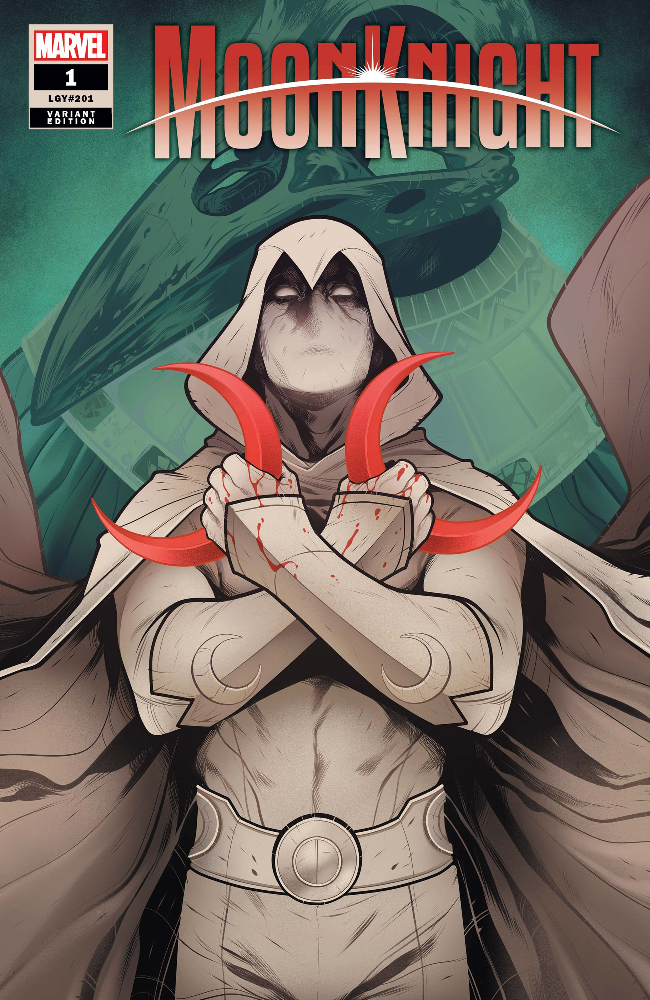

Passions and Hobbies of mine.
Gaming

I have a deep and long running passion in gaming. From a young age I started with my father's NES and Super Mario Bros, developing a deep love in the hobby that lasted up to the present day.
My favorite games are World of Warcraft, the modern Doom series, Elder Scrolls series, Ultrakill, the Dishonored series, Marvel Rivals, Minecraft, and Heroes of the Storm. I tend to gravitate most of all to World of Warcraft where I often find myself raid leading for my guild as whatever class and role is needed for me to help us succeed.
Back in 2018 I also competed in Heroes of the Dorm collegiate league with the Robert Morris University in Chicago as their support player, though I had flexed into a few roles over my time there. We ended up placing nationally within the top 18.
Comics
Comics have been a core passion and part of my life since I was little. From my passion for the Flash and Green Latern I gained from shows like Justice League and Justice League: Unlimited to learning about and reading comics from a camp counselor when I was little. Though these days I tend to lean more Marvel.
My favorite characters by far are Moon Knight and Khonshu, Spider-Man, Ultron, Captain America, and Ben Grimm The Thing. I highly recommend to anyone looking to get into Moon Knight to read the few runs by Jed Mckay that continue from Moon Knight into Vengeance of the Moon Knight and then Fist of Khonshu.
Tabletop Roleplaying Games

A more recent passion of mine, I have often found myself roleplaying in various mediums through video games like World of Warcraft. Only recently have I properly delved into the proper tabletop experience after a very brief encounter back in high school through Pathfinder.
These days I play in one of my friend's D&D 5th edition game as the resident party's cleric where all of my spell slots are burned keeping the party from death's door. I have also found myself running a campaign using the Monster of the Week system based in a world of my design.